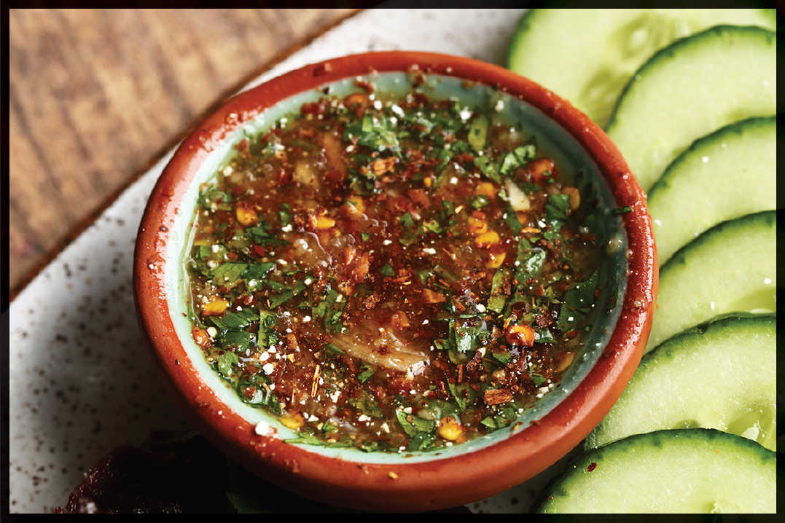

JAEW
|
Yield Makes 1 cup |
Active Time 10 minutes Total Time 10 minutes |
Prik pon is roasted and ground dried chiles from Thailand. Khao khua is toasted glutinous rice powder. You can find both ingredients at any Southeast Asian specialty market, most large Asian supermarkets with a Southeast Asian section, or from an online retailer.
INGREDIENTS
4 medium garlic cloves (about 10 g)
1 tablespoon (about 8 g) palm sugar
1 tablespoon (about 8 g) prik pon (see Note)
1 tablespoon (about 8 g) khao khua (see Note)
½ cup (120 ml) fish sauce, plus more to taste
3 tablespoons (45 ml) lime juice from about 3 limes, plus more to taste
1 medium shallot (about 1½ ounces/45 g), thinly sliced, plus more to taste
Handful of fresh cilantro leaves, finely chopped (about 20 g)
Nam pla prik (here), made with fresh chiles and fish sauce, may be the most well-known Thai dipping sauce, but jaew, its tangier, more aromatic cousin made with fresh aromatics and dried chiles, is my favorite. It goes wonderfully well with any kind of grilled meat and is the classic accompaniment to kai yang (Thai-style grilled chicken; you can find my recipe for it on SeriousEats.com) or mu ping (grilled pork skewers). It’s also great as a dip for nua kem (here).
While it’s possible to make the sauce with any dried chile, I urge you to seek out or special-order Thai-style roasted and ground dried chiles (prik pon), which have an intense heat and a flavor that’s equal parts fruity and smoky. The other specialty ingredient you’ll need is khao khua, which is glutinous rice (also sold as “sweet rice” or “sticky rice”; see here of the rice guide) that has been toasted and ground into a powder. You can find it at any Southeast Asian market or online retailer, or you can make it yourself by stirring ½ cup of dry glutinous rice in a wok over medium heat until it is toasty brown all over, then grinding it in a mortar and pestle or a spice grinder.
Note that even without the special ingredients you can make a delicious dipping sauce using any type of ground dried chiles in place of the prik pon and omitting the khao khua (just don’t tell any Thai food purists you know).
DIRECTIONS
Combine the garlic and palm sugar in a mortar and pound to a paste with a pestle. Add the prik pon, khao khua, fish sauce, and lime juice and stir with the pestle until the paste is fully dissolved into the liquid. Stir in the shallots and cilantro leaves. Adjust to taste with more fish sauce, lime juice, or ground chile.
